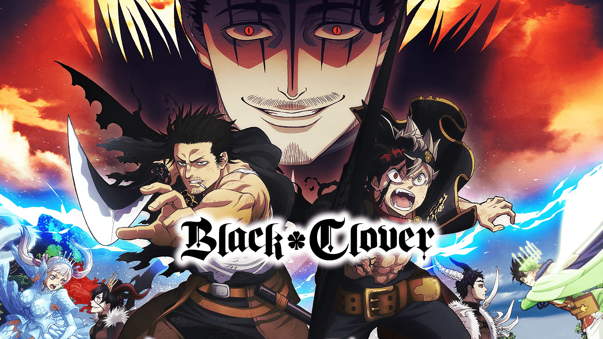

Black Clover

SINOPSE
- Black Clover é um anime de ação, aventura, magia e fantasia, baseado no mangá escrito e ilustrado por Yūki Tabata. A história se passa em um mundo onde a magia é uma parte essencial da vida cotidiana, e os indivíduos com habilidades mágicas excepcionais são altamente valorizados. O anime segue os sonhos e as aventuras de dois jovens órfãos que buscam se tornar os maiores magos do mundo.